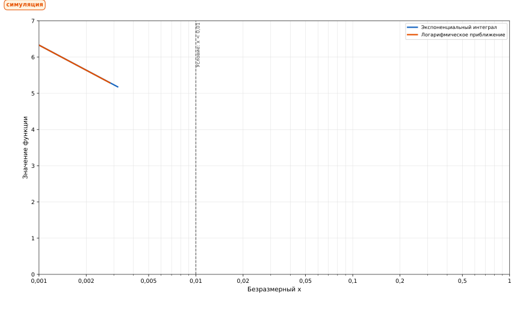
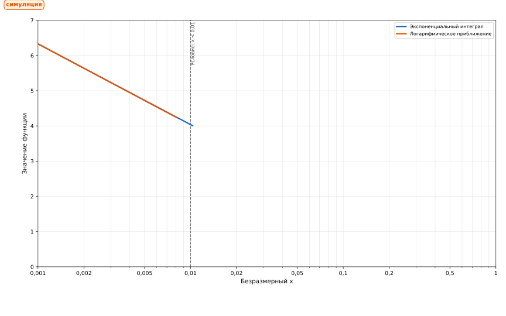
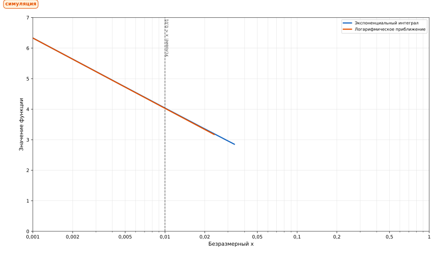
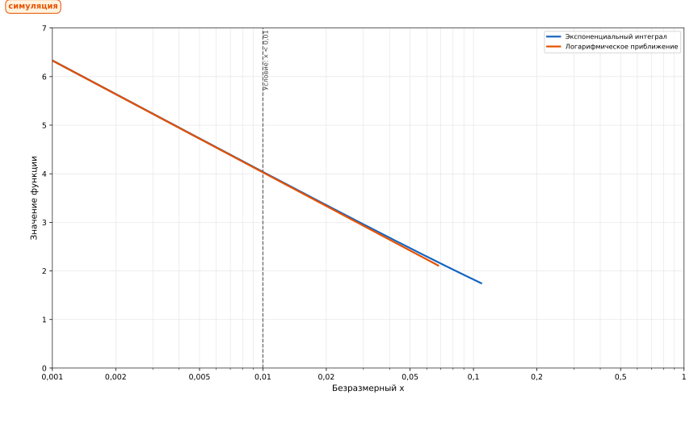
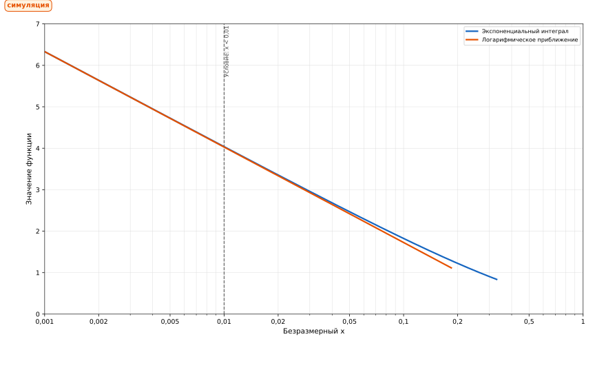
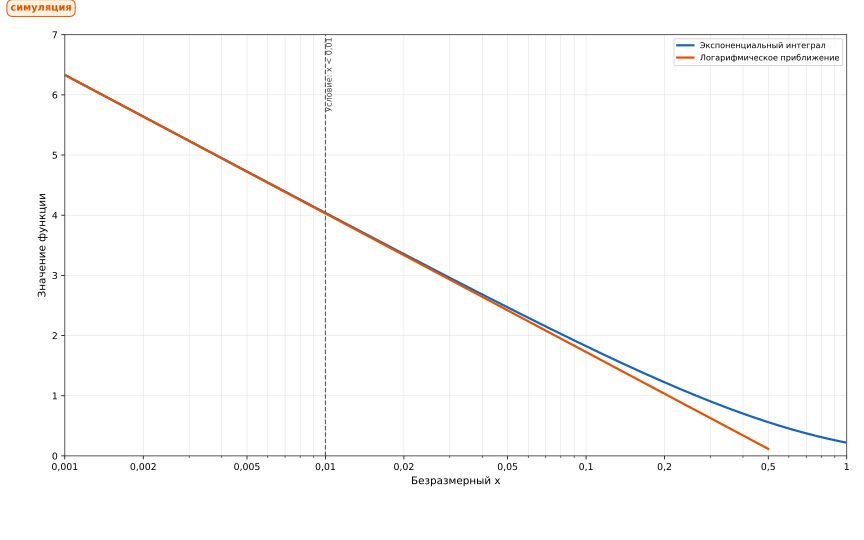

Стр. 88 · 7.3 THE CONSTANT TERMINAL RATE SOLUTION FOR TRANSIENT AND SEMI STEADY STATE FLOW CONDITIONS
$$\int_{x}^{\infty} \frac{e^{-s}}{s} ds = \int_{x}^{\infty} \frac{e^{-s}}{s} ds \quad x = \frac{\phi \mu c r^2}{4kt}$$
The Basic Differential Equation for Radial Flow in a Porous Medium; the constant terminal rate solutionШаг 19 из 21
В книге: «Решение для постоянного дебита при переходном и псевдоустановившемся течении» стр. 88–89
Опирается на: шаг 18 «От производной к давлению» (предпосылка)
Экспоненциальный интеграл можно заменить логарифмом только при малом безразмерном аргументе.
Иначе остаётся полная функция, площадь под кривой от аргумента до бесконечности.
Пороговая идея. Логарифмическая форма — приближение с областью применимости, а не другое имя полного интеграла. модель






Смотрим на большой интеграл при малом нижнем пределе.
Допущения: Схемы и относительные оси условны; реальные замеры не использованы..
Автор обозначает интеграл величины exp(−s)/s от x до бесконечности как ei(x). При малом x интеграл охватывает большую площадь. При большом x остаётся меньшая площадь. Функцию обычно представляют на осях с логарифмическими шкалами. стр. 88
«is a standard integral, called the exponential integral, and is denoted by ei(x).»
«Thus ei (x) is large for small values of x, since the ei-function is the area under the graph from the particular value of x out to infinity (i.e. the shaded area in curve (c) of fig. 7.2) and, conversely, small for large values of x.»
«The ei-function is normally plotted on a log-log scale and such a version is included as fig. 7.3.»
Автор использует логарифмическое приближение, если x < 0,01. В исходной форме приближения из отрицательного логарифма x вычитают 0,5772. стр. 88
«From this curve it can be seen that if x < 0.01, ei (x) can be approximated as»
«$$ei(x) \approx - \ln x - 0.5772 \tag{7.8}$$»
Число 0,5772 — постоянная Эйлера. Автор выделяет её экспоненту. Экспоненту постоянной обозначают γ. Формула даёт значение 1,781. Приближение можно записать как минус логарифм произведения γ и x. стр. 89
«where the number 0.5772 is Euler's constant, the exponential of which is denoted by»
«where the number 0.5772 is Euler's constant, the exponential of which is denoted by»
«$$ei(x) \approx - \ln (\gamma x)$$»
Экспоненциальный интеграл с текущим нижним пределом. стр. 88
| Обозначение | Что это | Единицы |
|---|---|---|
| $s$ | безразмерная переменная подобия или переменная интегрирования | — |
| $x$ | значение безразмерной переменной на текущем времени | — |
| $\phi$ | пористость, доля пор в объёме породы | — |
| $\mu$ | вязкость жидкости | — |
| $c$ | изотермическая сжимаемость | — |
| $r$ | радиус, расстояние от центра скважины | — |
| $k$ | проницаемость | — |
| $t$ | время после начала отбора | — |
Логарифмическое приближение с постоянной Эйлера. стр. 88
| Обозначение | Что это | Единицы |
|---|---|---|
| $x$ | значение безразмерной переменной на текущем времени | — |
Экспонента от постоянной Эйлера с авторским округлением. стр. 89
| Обозначение | Что это | Единицы |
|---|---|---|
| $\gamma$ | экспонента от постоянной Эйлера | — |
Компактная запись логарифмического приближения. стр. 89
| Обозначение | Что это | Единицы |
|---|---|---|
| $x$ | значение безразмерной переменной на текущем времени | — |
| $\gamma$ | экспонента от постоянной Эйлера | — |
Область допустимости указанного приближения. стр. 89
| Обозначение | Что это | Единицы |
|---|---|---|
| $x$ | значение безразмерной переменной на текущем времени | — |
Ошибка: Экспоненциальный интеграл можно всегда заменить логарифмом.
На самом деле: У автора это приближение применяется при x < 0.01. стр. 88–89
Сначала находят безразмерный x. Сверяют его с областью применимости, затем при малом x можно заменить полный интеграл логарифмом.
В пределах допустимого диапазона можно заменить дорогую математическую функцию простой аппроксимацией.
Где аналогия перестаёт работать: За границей области результат аппроксимации не считается точным, даже если выражение вычисляется.
Верный ответ: При x < 0,01
Применимость определяется безразмерным x. Где это в тексте (стр. 88) →
Верный ответ: Она мала при большом x; Она велика при малом x
Больший нижний предел оставляет меньшую площадь. Где это в тексте (стр. 88) →
К какой постоянной относится 0,5772?
Автор называет 0,5772 постоянной .
Верный ответ: Автор называет 0,5772 постоянной [Эйлера].
Постоянная входит в логарифмическое приближение. Где это в тексте (стр. 89) →
Все утверждения шага с дословной цитатой автора и страницей книги (по PDF).
Автор обозначает интеграл величины exp(−s)/s от x до бесконечности как ei(x). наблюдение
«is a standard integral, called the exponential integral, and is denoted by ei(x).»
При малых x интеграл велик, поскольку захватывает большую площадь под кривой; при больших x мала остающаяся площадь. наблюдение
«Thus ei (x) is large for small values of x, since the ei-function is the area under the graph from the particular value of x out to infinity (i.e. the shaded area in curve (c) of fig. 7.2) and, conversely, small for large values of x.»
Функцию обычно представляют на осях с логарифмическими шкалами. наблюдение
«The ei-function is normally plotted on a log-log scale and such a version is included as fig. 7.3.»
Автор использует логарифмическое приближение, если x < 0.01. наблюдение
«From this curve it can be seen that if x < 0.01, ei (x) can be approximated as»
В исходной форме приближения из отрицательного логарифма x вычитают 0.5772. наблюдение
«$$ei(x) \approx - \ln x - 0.5772 \tag{7.8}$$»
Число 0.5772 — постоянная Эйлера; автор выделяет её экспоненту. наблюдение
«where the number 0.5772 is Euler's constant, the exponential of which is denoted by»
Экспоненту постоянной обозначают γ; формула даёт значение 1.781. наблюдение
«where the number 0.5772 is Euler's constant, the exponential of which is denoted by»
Приближение можно записать как минус логарифм произведения γ и x. наблюдение
«$$ei(x) \approx - \ln (\gamma x)$$»
Стр. 88 · 7.3 THE CONSTANT TERMINAL RATE SOLUTION FOR TRANSIENT AND SEMI STEADY STATE FLOW CONDITIONS
$$\int_{x}^{\infty} \frac{e^{-s}}{s} ds = \int_{x}^{\infty} \frac{e^{-s}}{s} ds \quad x = \frac{\phi \mu c r^2}{4kt}$$
Стр. 88 · 7.3 THE CONSTANT TERMINAL RATE SOLUTION FOR TRANSIENT AND SEMI STEADY STATE FLOW CONDITIONS
is a standard integral, called the exponential integral, and is denoted by ei(x).
Стр. 88 · 7.3 THE CONSTANT TERMINAL RATE SOLUTION FOR TRANSIENT AND SEMI STEADY STATE FLOW CONDITIONS
Qualitatively, the nature of this integral can be understood by considering the component parts, fig. 7.2.
Стр. 88 · 7.3 THE CONSTANT TERMINAL RATE SOLUTION FOR TRANSIENT AND SEMI STEADY STATE FLOW CONDITIONS
The integral of curve (c) between x and $\infty$ will have the shape shown in fig. 7.2 (d). Thus ei (x) is large for small values of x, since the ei-function is the area under the graph from the particular value of x out to infinity (i.e. the shaded area in curve (c) of fig. 7.2) and, conversely, small for large values of x. The ei-function is normally plotted on a log-log scale and such a version is included as fig. 7.3. From this curve it can be seen that if x < 0.01, ei (x) can be approximated as
Стр. 88 · 7.3 THE CONSTANT TERMINAL RATE SOLUTION FOR TRANSIENT AND SEMI STEADY STATE FLOW CONDITIONS
$$ei(x) \approx - \ln x - 0.5772 \tag{7.8}$$
Стр. 89 · 7.3 THE CONSTANT TERMINAL RATE SOLUTION FOR TRANSIENT AND SEMI STEADY STATE FLOW CONDITIONS
Fig. 7.2 The exponential integral function ei(x).
Стр. 89 · 7.3 THE CONSTANT TERMINAL RATE SOLUTION FOR TRANSIENT AND SEMI STEADY STATE FLOW CONDITIONS
where the number 0.5772 is Euler's constant, the exponential of which is denoted by
Стр. 89 · 7.3 THE CONSTANT TERMINAL RATE SOLUTION FOR TRANSIENT AND SEMI STEADY STATE FLOW CONDITIONS
$$\gamma = e^{0.5772} = 1.781$$
Стр. 89 · 7.3 THE CONSTANT TERMINAL RATE SOLUTION FOR TRANSIENT AND SEMI STEADY STATE FLOW CONDITIONS
and therefore equ. (7.8) can be expressed as
Стр. 89 · 7.3 THE CONSTANT TERMINAL RATE SOLUTION FOR TRANSIENT AND SEMI STEADY STATE FLOW CONDITIONS
$$ei(x) \approx - \ln (\gamma x)$$
Стр. 89 · 7.3 THE CONSTANT TERMINAL RATE SOLUTION FOR TRANSIENT AND SEMI STEADY STATE FLOW CONDITIONS
$$\text{for } x < 0.01$$
На этот шаг опираются: шаг 20 «Как читать давление в скважине».
Когда интеграл заменяют логарифмом
Ссылки в ответе ведут к исходному тексту.